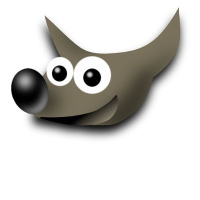
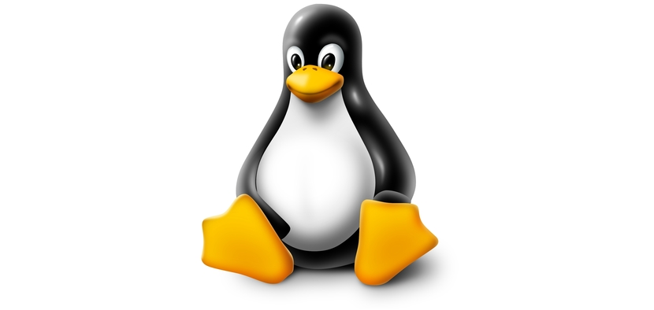
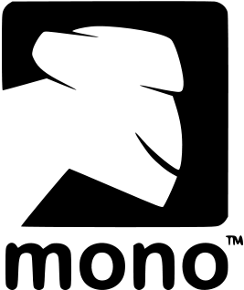
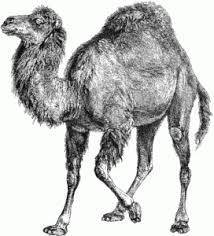
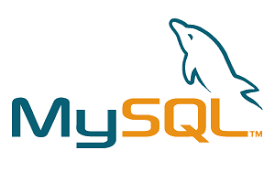
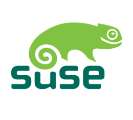

Software libre
Definiciones basicas
Software Libre
La definicon de software libre estipula los criteriosque se tienen que cumplir para que u programa sea considerado
libre.
Debes en cuando modificmos esta definicon para clarificarla o resolver problemassobre cuestiones delicadas
Mas abajo en esta pagina, en la seleccion
Historial,
se puede consultar la lista de modificaciones que afectan la definicion de software libre.
"Software Libre
es el software que respeta la libertad de los urusios y la comunidad. En gandes lineas, significa que los usurios tiene la libertad para ejecutr, copiar, distribuir, estudiar, modificar y mejorar el software. Es decir, el
"Software Libre" es una cuestion de libertad, no de precio. Para entender al concepto, piense en "Libre" como en "Libre Expresion" , no como en barra libre .
Promovemos estas libertades por que todos merecen tenerlas. Con estas libertades, los usuarios ( tanto individualmente como es forma colectiva) controla el programa y lo que este hac. Cuando los usuarios o controlan el programa, decimos que dicho programa -no es libre- , o que es -prmiivo-. Un programa que no es libre controla a los usuarios, y el programador controla el programa, con lo cual el programa resulta ser un instrumento de poder injusto.
Un programa es software libre si los usuarios tien la cuatro libertades esenciales:
La libertad de ejecutar el program como se desea , con cualquier proposito (libertad 0)
La libertad de estudiar como funciona el programa y cambiarlo para que usted quiera (libertad 1). El acceso al Codigo fuente es una condicon necesaria para ello.
La libertad de redistribuir copias para ayudar a su projimo (libertad 2)
La libertad de distribuir copia de sus versiones modificadas a terceros (libertad 3). Esto le permite ofrecer a la comunidad la oportunidad de beneficiarse de las modificaciones.El acceso al codigo fuente es una condiconnecesaria para ello.
La libertad para distribuir (libertades 2 y 3) significa que usted tiene la libertad para redistribuir copias con o sin modificaciones, ya sean gratuitamente o cobrando tarifa por la distribucion, a cualquiera en cualquier parte. Ser libre de hacer esto significa, entre otras cosas, que no tiene debe que pedir ni pagar ningun permiso para hacerlo
Mascotas del mundo del software libre
Ñu  |
Un Ñu es el animal del proyecto GNU significa "Ñu" en ingles. El nombre GNU no se adopto porque a la persona que comenzo el proyecto
(Richard Stallman) le gustase particularmente este animal sino porque GNU es un acronimo recursivo que quiere decir "GNU´s Not Unix." | s
Gimp  |
Wilber es la mascota de GIMP (GNU Image Manipulation Program) fue creada en 1997 por Thomas Knosmamen y Wilber es un... gimo. A menudo se confunde con un zorro o
un raton pero segun su creador, Wilber es simplemente un gimp. |
Tux  |
La idea de Tux surgio del propio Linux Tarvalds; segun cuenta, de pequeño le mordio un pinguino en Australia y desde entonces le parecio un animal simpatico. No hay un origen
claro del nombre "Tux" ; algunos dicen que proviene del ingles tuxedo que significa esmoquin (siempre se ha dicho que los pinguinos van de esmiquin) y otros dicen que nombre el
nombre es una mezcla de Torvald con Unix. |
Mono  |
Mono es tanto el nombre como el animal representativo como de un proyecto que pretende ser una implementacion libre de la plataforma.Net |
Perl  |
El camello es la imagen del lenguaje Perl desde que apareciese por primera vez en el libro "Programming Perl", curiosamente, el camello de perl tiene
derechos de autor( la editorial O´Reilly). |
Mysql  |
El delfin que es parte del logo de MySql se llama Sakila. este delfin representa los valores de la campaña y de la base de datos: rapidez, precision,
potencia y naturalidad. |
Suse  |
Geelco; asi se llama el simpatico camaleon que es la mascota de la campaña Alemana Suse. El nombre fue elegido tras un concurso en el participo miles de personas y proviene
del termino geek.
(http://es.wikipedia.org/wiki/Geek) que se podria traducir al castellano como friki. |
Software libre la comunidad hacia el conocimiento Seguir leyendo
Linux